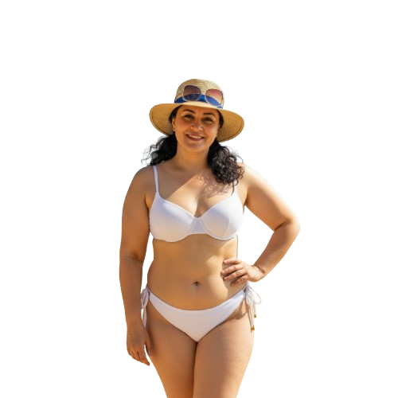

AI Diet Planner (online)
Загрузи фото — получи готовую диету
Загрузка фото
Выбрать фото
Назначить диету
Разблокировать график (тест)
Примечание: озвучка работает в современных браузерах и может требовать HTTPS.
Твоя диета
Здесь появится план питания
График веса и калорий
